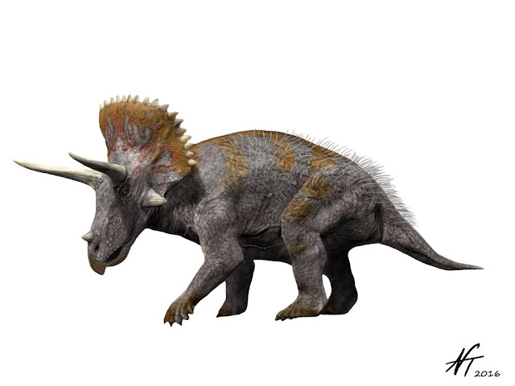
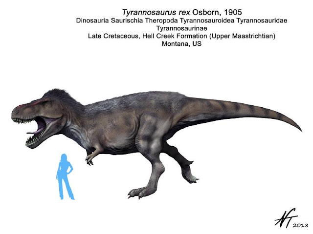
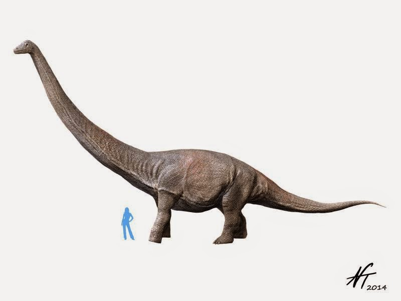
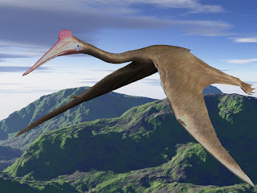

The Cretaceous Period
The Cretaceous Period is home to the iconic Tyrannosaurus Rex and Triceratops, and the largest land and flying animals to ever exist! The Cretaceous began 145 million years ago and ended 66 million years ago.
Triceratops
Triceratops horridus by Nobu Tamura at http://spinops.blogspot.com/2016/07/triceratops-horridus.html CC BY-NC-ND 3.0
Tyrannosaurus Rex
Tyrannosaurus rex by Nobu Tamura at http://spinops.blogspot.com/2018/01/tyrannosaurus-rex.html CC BY-NC-ND 3.0
Titanosaurs
Dreadnoughtus schrani by Nobu Tamura at http://spinops.blogspot.com/2014/11/dreadnoughtus-schrani.html CC BY-NC-ND 3.0
The Titanosaurs are a group of sauropods that were the largest land animals ever!
Quetzalcoatlus
Quetzalcoatlus northropi by Nobu Tamura at http://spinops.blogspot.com/2012/06/quetzalcoatlus-northropi.html CC BY-NC-ND 3.0
Queztalcoatlus was a genus of pterosaur that was the largest flying creature to exist!
Click here to learn more about the Cretaceous Period!